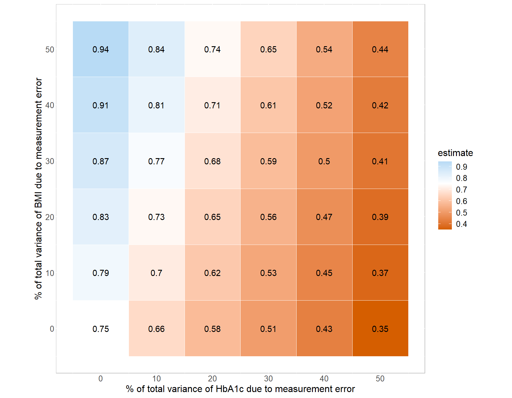

library(Hmisc)
library(mice)
library(tidyverse)Replication Boulesteix 2020 / Ex2
Introduction
The following document aims to efficiently reproduce the methodology and results of the small scale simulation study conducted by Boulesteix et al. (2020) that investigated the impact of measurement error on continuous exposure and confounding variables in a linear regression model. Specifically, we will reproduce the original R script of the study where the authors examined how the linear association between glycated haemoglobin (HbA1c) levels and systolic blood pressure was affected as more measurement error was introduced to either HbA1c (exposure) or the confounder variable Body Mass Index (BMI), while statistically controlling for age and gender as well. Measurement error was introduced into HbA1c and BMI by adding independent, normally distributed errors with a mean of zero to their original scores. The error variance was varied to account for 0% to 50% of each predictor’s total variance tested in 10% point increments. This produced 36 scenarios, each repeated 1,000 times with newly generated errors, and the resulting regression coefficients were averaged per scenario. The dataset used for the simulation was the 2015-2016 National Health and Nutrition Examination Survey (Centers for Disease Control and Prevention 2015).
Data Preparation
We load the required packages for the original R script to be able to run.
We import the necessary NHANES datasets to be merged.
d1 <- sasxport.get("data/DEMO_I.xpt")Processing SAS dataset DEMO_I ..d2 <- sasxport.get("data/BPX_I.xpt")Processing SAS dataset BPX_I ..d3 <- sasxport.get("data/BMX_I.xpt")Processing SAS dataset BMX_I ..d4 <- sasxport.get("data/GHB_I.xpt")Processing SAS dataset GHB_I ..d5 <- sasxport.get("data/TCHOL_I.xpt")Processing SAS dataset TCHOL_I ..For all 5 datasets we select only the relevant specific variables (columns) as aforementioned from the corresponding datasets including the patients Respondent Sequence Number (seqn), the control variables age (ridageyr), gender (riagendr), BMI (bmxbmi), the predictor Glycohemoglobin (lbxgh) and outcome variable systolic blood pressure (bpxsy1). Total cholesterol (lbdtcsi) is also selected but its not used in the analysis of the original study R script due to missing values.
d1.t <- subset(d1,select=c("seqn","riagendr","ridageyr"))
d2.t <- subset(d2,select=c("seqn","bpxsy1"))
d3.t <- subset(d3,select=c("seqn","bmxbmi"))
d4.t <- subset(d4,select=c("seqn","lbxgh"))
d5.t <- subset(d5,select=c("seqn","lbdtcsi"))Before merging, we verify that respondent sequence numbers (seqn) are unique and contain no missing values within each dataset, ensuring that participants could be matched without unintended duplication.
# Check that participant identifiers are complete and unique.
datasets <- list(d1.t, d2.t, d3.t, d4.t, d5.t)
stopifnot(
all(sapply(datasets, function(x) !anyNA(x$seqn))),
all(sapply(datasets, function(x) !anyDuplicated(x$seqn)))
)The patients Respondent Sequence Number (seqn) is then used as the identifying variable to sequentially merge all the patient information into one dataset creating a dataframe with patients that existed in all datasets alongside their corresponding medical record values for all variables. Resulting in the dataframe called “d” of 6744 patients and the 7 selected variables.
d <- merge(d1.t,d2.t)
d <- merge(d,d3.t)
d <- merge(d,d4.t)
d <- merge(d,d5.t)
# Verify that the merged dataset contains unique participants.
stopifnot(!anyDuplicated(d$seqn))
# Display the resulting number of observations and variables.
dim(d)[1] 6744 7Variables in the dataframe are then renamed accordingly for readability in the code. Also patients that were minors at time of screening receive an NA value for their age so subsequently all information related to them is not included in the analysis. Here Total cholesterol chol is dropped.
# rename variables:
# RIAGENDR - Gender
# RIDAGEYR - Age in years at screening
# BPXSY1 - Systolic: Blood pres (1st rdg) mm Hg
# BMXBMI - Body Mass Index (kg/m**2)
# LBDTCSI - Total Cholesterol (mmol/L)
# LBXGH - Glycohemoglobin (%)
d$age <- d$ridageyr
d$sex <- d$riagendr
d$bp <- d$bpxsy1
d$bmi <- d$bmxbmi
d$HbA1C <- d$lbxgh
d$chol <- d$lbdtcsi
d$age[d$age<18] <- NACase-wise deletion is performed to remove minors and patients that have missing values in their measurements. The resulting dataframe to be used for the simulation study is dc with 5092 patients and the 5 kept variables that have no missing values.
# select complete cases:
dc <- cc(subset(d,select=c("age","sex","bmi","HbA1C","bp")))
# Display the resulting number of observations and variables of final df.
dim(dc)[1] 5092 5Initial Regression Results
The following code chunk reproduces the regression results without the measurement error introduced reported in the paper as follows: “After adjustment for age and gender, it was estimated that HbA1c increases systolic blood pressure by 1.13 mmHg (95% CI 0.73 to 1.52) per unit increase in HbA1c. Additional adjustment for BMI resulted in a considerable change in the effect estimate: HbA1c was estimated to increase blood pressure by 0.75 mmHg (95% CI 0.35 to 1.16) per unit increase in HbA1c.”. The code is the same as in the original script with some modifications in how the regression objects are stored for better reproducibility and visualization of the results. The results are consistent with the study reporting.
# analysis:
# Fit both regression models.
model_1 <- lm(bp ~ HbA1C + age + as.factor(sex), data = dc)
model_2 <- lm(bp ~ HbA1C + bmi + age + as.factor(sex), data = dc)
# Display rounded HbA1c estimates and 95% confidence intervals to.
round(rbind(
"HbA1c | Adjusted for age and sex" =
c(Estimate = coef(model_1)["HbA1C"], confint(model_1)["HbA1C", ]),
"HbA1c | Additionally adjusted for BMI" =
c(Estimate = coef(model_2)["HbA1C"], confint(model_2)["HbA1C", ])
), 2) Estimate.HbA1C 2.5 % 97.5 %
HbA1c | Adjusted for age and sex 1.13 0.73 1.52
HbA1c | Additionally adjusted for BMI 0.75 0.35 1.16Reproducing the Simulation
To ensure reproducibility, we first executed the original simulation script and saved its regression coefficient estimates (beta.hat), random-number generator (RNG) configuration, and R version in original_sim_results.rds using saveRDS(). This procedure was documented in scripts/save_original_sim_results.R in the research compendium, allowing the reference results to be regenerated.
We then reproduced the simulation using a standalone function (simulate_measurement_error()), preserving the original simulation procedure, all 36 scenarios, 1,000 repetitions per scenario, random seeds (set.seed(k)), and order of random-number generation. The function was sourced from scripts/simulate_measurement_error.R, and its execution was cached to avoid unnecessary recomputation, with changes to the function script invalidating the cache.
To verify equivalence between the original simulation and our function-based replication, we used identical() to compare all 36,000 regression coefficient estimates stored in original_sim_results.rds with those generated by simulate_measurement_error(), as well as the random-number generator (RNG) configurations used in both executions. Both comparisons confirmed exact equality, demonstrating that our function-based implementation numerically reproduced the original simulation results. Additionally, we documented the R version under which both implementations were executed to ensure transparency about the computational environment for future users.
# Load simulation function.
source("scripts/simulate_measurement_error.R")
# Record RNG configuration used for the simulation replication.
replication_rng <- RNGkind()
# Run the original simulation using our function under the same conditions.
sim_results <- simulate_measurement_error(data = dc, n_sim = 1000, error_levels = seq(0, 0.5, 0.1))
# Display scenario-level results.
print(sim_results$scenarios) me_HbA1c me_BMI mean_estimate
1 0.0 0.0 0.7517657
2 0.1 0.0 0.6628378
3 0.2 0.0 0.5825340
4 0.3 0.0 0.5072374
5 0.4 0.0 0.4338440
6 0.5 0.0 0.3502494
7 0.0 0.1 0.7906208
8 0.1 0.1 0.7034520
9 0.2 0.1 0.6161393
10 0.3 0.1 0.5319735
11 0.4 0.1 0.4479394
12 0.5 0.1 0.3721709
13 0.0 0.2 0.8292559
14 0.1 0.2 0.7338352
15 0.2 0.2 0.6460145
16 0.3 0.2 0.5607541
17 0.4 0.2 0.4711884
18 0.5 0.2 0.3880417
19 0.0 0.3 0.8678547
20 0.1 0.3 0.7706130
21 0.2 0.3 0.6809899
22 0.3 0.3 0.5875478
23 0.4 0.3 0.4989543
24 0.5 0.3 0.4093861
25 0.0 0.4 0.9061185
26 0.1 0.4 0.8087846
27 0.2 0.4 0.7083373
28 0.3 0.4 0.6127115
29 0.4 0.4 0.5211295
30 0.5 0.4 0.4239230
31 0.0 0.5 0.9432271
32 0.1 0.5 0.8431170
33 0.2 0.5 0.7365917
34 0.3 0.5 0.6458301
35 0.4 0.5 0.5434998
36 0.5 0.5 0.4421866# Load original simulation reference.
original <- readRDS("results/original_sim_results.rds")
# Compare simulation estimates.
identical(original$beta_hat, sim_results$beta_hat)[1] TRUE# Compare random-number generator configurations.
identical(original$rng_kind, replication_rng)[1] TRUE# Display RNG configurations.
rbind(Original = original$rng_kind, Replication = replication_rng) [,1] [,2] [,3]
Original "Mersenne-Twister" "Inversion" "Rejection"
Replication "Mersenne-Twister" "Inversion" "Rejection"# Compare R versions
c(Original = original$r_version, Replication = R.version.string) Original Replication
"R version 4.6.1 (2026-06-24 ucrt)" "R version 4.6.1 (2026-06-24 ucrt)" Evaluation: Bias and confidence interval coverage rate
As an additional evaluation of the simulation, we assessed the deviation of the mean HbA1c regression coefficient from the original estimate without added measurement error (0.752 mmHg). For this purpose, we extended the simulate_measurement_error() function to also extract and store the 95% confidence intervals from each regression fit, allowing us to calculate the percentage of intervals containing the reference estimate across the 1,000 repetitions per scenario. For concise reporting, we selected the four combinations of minimum (0%) and maximum (50%) measurement error in HbA1c and BMI, namely, no error in either predictor (0%, 0%), error only in HbA1c (50%, 0%), error only in BMI (0%, 50%), and error in both predictors (50%, 50%). Since the original NHANES 2015–2016 dataset remained fixed, these measures describe deviations and confidence interval inclusion relative to this dataset rather than bias and coverage at the population level.
# Reference HbA1c coefficient without added measurement error.
reference <- unname(coef(model_2)["HbA1C"])
# Calculate reference-based performance measures for all scenarios.
performance <- transform(
sim_results$scenarios,
reference_deviation = mean_estimate - reference,
ci_inclusion_pct = 100 * colMeans(
sim_results$ci_lower <= reference &
sim_results$ci_upper >= reference
)
)
# Select the four extreme scenarios for concise reporting.
selected <- with(performance, me_HbA1c %in% c(0, 0.5) & me_BMI %in% c(0, 0.5))
# Display the relevant results.
performance_table <- data.frame(
HbA1c_Error_Percent = 100 * performance$me_HbA1c[selected],
BMI_Error_Percent = 100 * performance$me_BMI[selected],
Mean_Estimate = round(performance$mean_estimate[selected], 3),
Reference_Deviation = round(performance$reference_deviation[selected], 3),
CI_Inclusion_Percent = round(performance$ci_inclusion_pct[selected], 1)
)
print(performance_table, row.names = FALSE) HbA1c_Error_Percent BMI_Error_Percent Mean_Estimate Reference_Deviation
0 0 0.752 0.000
50 0 0.350 -0.402
0 50 0.943 0.191
50 50 0.442 -0.310
CI_Inclusion_Percent
100.0
11.7
100.0
36.7The results showed that introducing 50% measurement error solely into HbA1c reduced its estimated coefficient from 0.752 to 0.350 mmHg, with only 11.7% of confidence intervals containing the reference estimate. Conversely, introducing measurement error solely into BMI increased the coefficient to 0.943 mmHg, with 100% reference inclusion. When both predictors contained 50% measurement error, the estimate decreased to 0.442 mmHg, with an inclusion rate of 36.7%.
These findings are consistent with the explanation provided by Boulesteix et al. (2020):
“The association became stronger as measurement error was added solely to the confounding variable BMI. The reason for this effect is that, with increasing levels of measurement error on BMI, adjustment for the confounding due to BMI becomes less efficient and the effect estimate gets closer to the unadjusted estimate (1.13 mmHg)”
Thus, measurement error in HbA1c was associated with attenuation of its estimated coefficient, whereas measurement error in BMI reduced the effectiveness of confounding adjustment. Importantly, high reference inclusion rates do not necessarily indicate unbiased estimates or adequate frequentist confidence interval coverage.
Reproducing the figure
The original study’s figure was reproduced using the regression coefficient estimates generated by simulate_measurement_error(). We preserved the original plotting code and specifications, making only the necessary adjustments to retrieve the simulation results from our function. The original savePlot() command was replaced with ggsave() to save the figure as a TIFF file in the research compendium’s results/ directory. Unlike savePlot(), ggsave() saves the ggplot2 object directly and allows explicit specification of the output dimensions and resolution, improving portability and reproducibility without altering the figure’s content or aesthetics.
# Retrieve original simulation objects from our function.
scenarios <- sim_results$scenarios[, c("me_HbA1c", "me_BMI")]
beta.hat <- sim_results$beta_hat
ref <- unname(coef(model_2)["HbA1C"])
# Original figure-generating code.
tot.mat <- cbind(100*scenarios,apply(beta.hat,2,mean))
colnames(tot.mat) <- c("me.exp","me.conf","estimate")
FIGURE <- ggplot(tot.mat, aes(me.exp, me.conf)) +
geom_tile(color="white",aes(fill = estimate)) +
geom_text(aes(label = round(estimate, 2))) +
scale_fill_gradient2(low="#D55E00",mid="white",high = "#56B4E9", midpoint=ref) +
labs(x=paste("% of total variance of HbA1c due to measurement error"),
y=paste("% of total variance of BMI due to measurement error")) +
coord_equal()+
scale_y_continuous(breaks=unique(tot.mat[,1]))+
scale_x_continuous(breaks=unique(tot.mat[,1]))+
theme(panel.background = element_rect(fill='white', colour='grey'),
plot.title=element_text(hjust=0),
axis.ticks=element_blank(),
axis.title=element_text(size=12),
axis.text=element_text(size=10),
legend.title=element_text(size=12),
legend.text=element_text(size=10))
# Save figure in the research compendium.
ggsave("results/Figure_STRATOS.tif", plot = FIGURE,
width = 9, height = 7, dpi = 300, compression = "lzw")
# Display figure.
FIGURE
References
Boulesteix, Anne-Laure, Rolf HH Groenwold, Michal Abrahamowicz, et al. 2020. “Introduction to Statistical Simulations in Health Research.” BMJ Open 10 (12): e039921. https://doi.org/10.1136/bmjopen-2020-039921.
Centers for Disease Control and Prevention. 2015. NHANES 2015–2016. https://wwwn.cdc.gov/nchs/nhanes/continuousnhanes/default.aspx?BeginYear=2015.